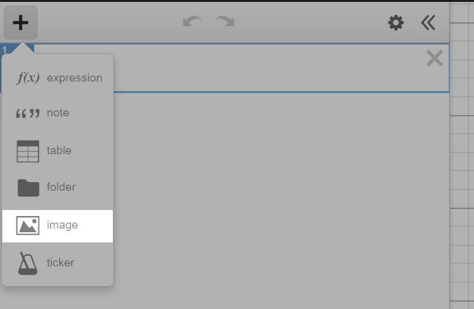
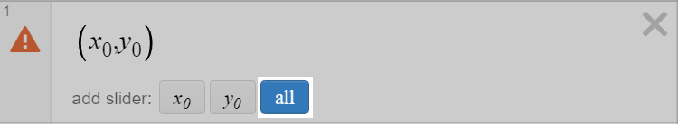
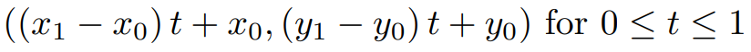

Introduction
The Desmos graphing calculator is often used to draw art (figure 1), in addition to visualizing equations and data. Official contests have been held, with art featured on the website. The following instructions describe one process of creating such art.
The basic understanding of Desmos is required and a strong understanding of high school level math is recommended (Algebra II or above).
Hint: Bolded keywords reveal additional information when moused over.
Table of Contents
1. Choosing a Reference
Choose and upload a reference image to Desmos.
Important: The difficulty and time required greatly depend on the reference. Easier references focus on one subject with clearly defined shapes (figure 2a). More difficult references contain fine detail (figure 2b). Photo-realistic images are not recommended since shapes and colors may not have well defined borders (figure 2c).
Figure 2a: A simple image containing a few large shapes and strokes which add detail to the image. Estimated time of completion 1 hour.
Figure 2b: A character drawing which contains many shapes and details. Estimated time of completion 5+ hours.
Figure 2c: A real-life photo which contains high amounts of fine detail. Not recommended.
2. Planning a Reference
Designate a shape or stroke.
Add a point along the path each time one of the following situations occur:
- Start or end of stroke
- A corner
A point at which the path is not smooth (the derivative is not continuous).
- A change in characteristic
Example: A line transitioning into an arc.
- An intersection of three or more shapes
To add a point, type (x_ ? →,y_ ? ) where ? is the current number of points already in the graph and → is the right arrow key.
Click the blue all button which appears.
Tip: Add all points to a folder to keep your graph organized.
3. Building Equations
All paths can be approximated by lines and Bezier curves. Other equations may be used, but each require additional adaptation which is outside the scope of this guide. Polynomials, Splines, and Fourier Series are among the most powerful techniques to name a few.
Experiment with the following equations to see how they work. Add any new points as needed so the points added in Step 2 may remain stationary.
Lines
The parametric equation which connects two points is as follows:
Copy-paste the following latex into Desmos: \left(\left(c-a\right)t+a,\left(d-b\right)t+b\right)
- Replace the two a’s with the x-value of the starting point.
- Replace the the two b’s with the y-value of the starting point.
- Replace c with the y-value of the starting point.
- Replace d with the y-value of the starting point.
Polygons
Polgons are a fast, efficient way to draw shapes that contain no curves. In Desmos, the polygon function takes a list of x-values and a list of y-values for parameters.
Copy-paste the following latex into Desmos: \operatorname{polygon}\left(\left[\right],\left[\right]\right)
- Type the x-values of the points, seperated by commas, in the first set of square brackets.
- Type the y-values of the points, seperated by commas, in the second set of square brackets.
Important: Make sure that the order of the points between the x and y values is the same.
Bezier Curves
Beziers can be used to approximate any curve.
Copy-paste the following latex into Desmos:
B\left(t,P\right)=\sum_{i=0}^{\operatorname{length}\left(P\right)-1} \operatorname{nCr}\left(\operatorname{length}\left(P\right)-1,i\right)\left(1-t\right)^{\operatorname{length}\left(P\right)-1-i}t^{i}P\left[i+1\right]
This statement only needs to appear once on the equation list. The function will allow you to more easily draw Bezier Curves.
Copy-paste the following latex into Desmos: \left(B_{ezier}\left(t,\left[\right]\right),B_{ezier}\left(t,\left[\right]\right)\right)
- Type the x-values of the points, seperated by commas, in the first set of square brackets.
- Type the y-values of the points, seperated by commas, in the second set of square brackets.
Tip: Moving points on a Bezier curve changes the entire curve, adding more points will cause the amount of influence on sections farther away to decrease.
You can view an example of the equations here:
4. Outlining Shapes
- If the shape contains only lines, use the polygon function to draw the shape. Otherwise, proceed with the following steps.
- Designate a starting point on the shape or stroke.
- If the current shape borders another previously drawn shape, proceed in the opposite direction. (If you drew the previous shape in the clockwise direction, draw the new shape in the counter-clockwise direction and vice versa.)
- Identify the next point in the sequence.
- Draw the appropriate line or curve to the next point.
- If the line or curve already exists, copy and paste the previous equation.
- Then if the previous line or curve was not drawn in the opposite direction, reverse the order of the points in the equation.
- Repeat steps 4-7 until the entire shape or stroke is drawn.
Repeat sections 2 (Planning a Reference) and 4 (Outlining Shapes) for the remaining shapes and arcs in the reference image.
5. Filling and Coloring
Desmos supports two main color models: RGB and HSV.
See Desmos Help for more information on creating colors.
To fill in shapes, we need to turn the lines and arcs into piecewise functions.
- Designate a shape.
- Copy-paste the following latex into Desmos:
\left(\left\{t<1:\right\},\left\{t<1:\right\}\right) - Designate a starting line or curve.
- Copy the x-component of line or curve into the equation from Step 2 after the first colon.
- Copy the y-component of line or curve into the equation from Step 2 after the second colon.
- Count the number of lines and curves in the shape.
Afterward
Now you should have the tools to recreate any drawing in Desmos.